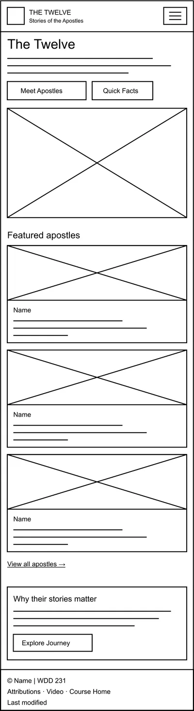
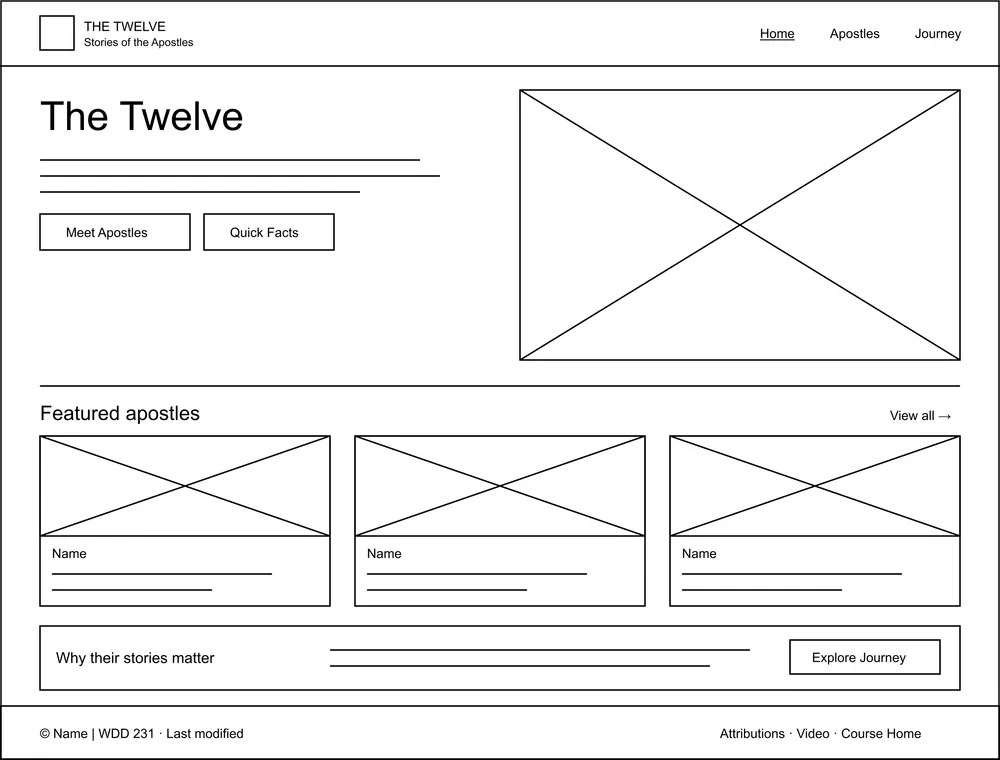

Site Name
The Twelve: Stories of the Apostles
The name points to the twelve men Jesus Christ called as His apostles, and the subtitle tells visitors that the site is about their stories.
Optional domain: thetwelvestories.org
Site Purpose
The site introduces visitors to the apostles of Jesus Christ. It gives short biographies, important events from their lives, interesting facts, places connected with their ministry, and references to the New Testament accounts.
Scenarios
- Who were the original Twelve, and what did they do before Jesus called them?
- Where in the New Testament can I read about Peter walking on the water?
- Which apostles were called after the Resurrection?
Color Scheme
| Color | Hex | Used for |
|---|---|---|
| #f4efe4 | Page background | |
| #292722 | Headings, paragraphs, footer background | |
| #745036 | Buttons, links, and accents |
Typography
Georgia: headings and body text
Arial: navigation, buttons, and labels
Wireframes
Mobile

Desktop
